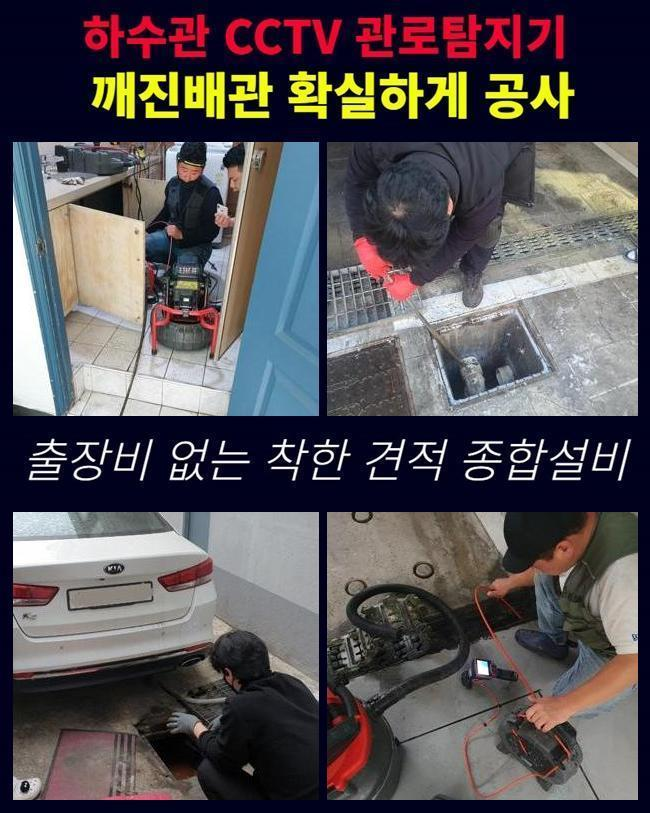
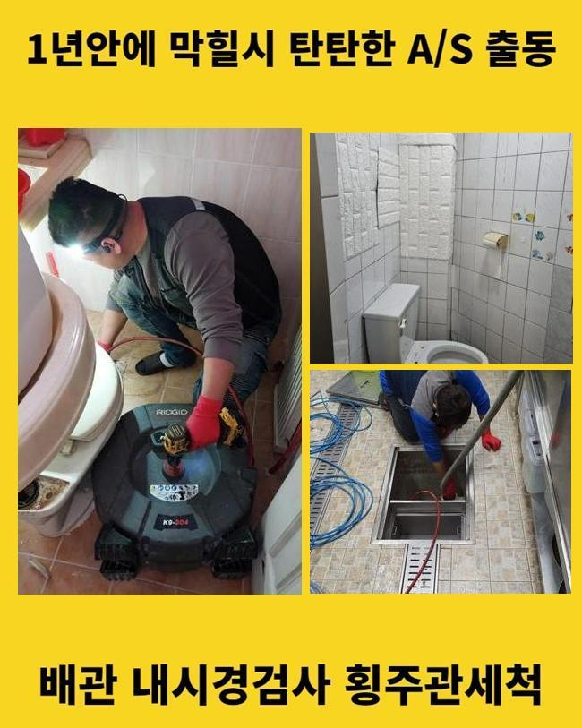
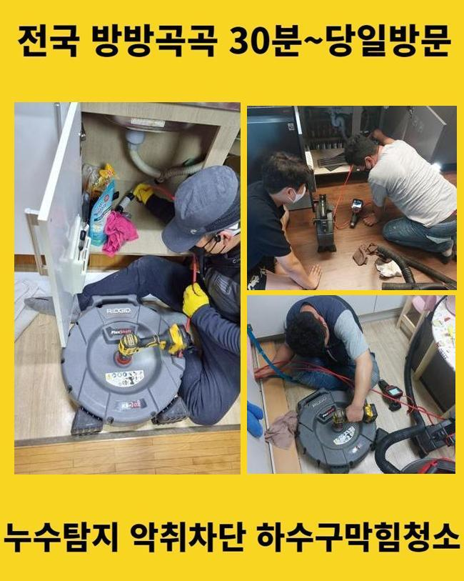
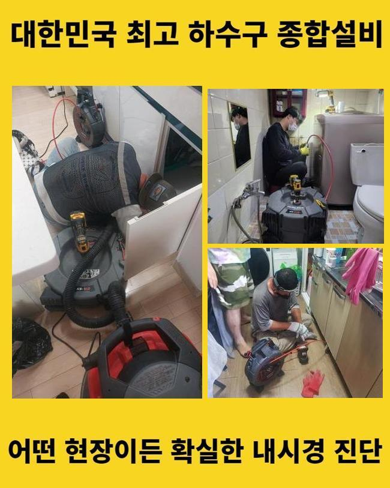
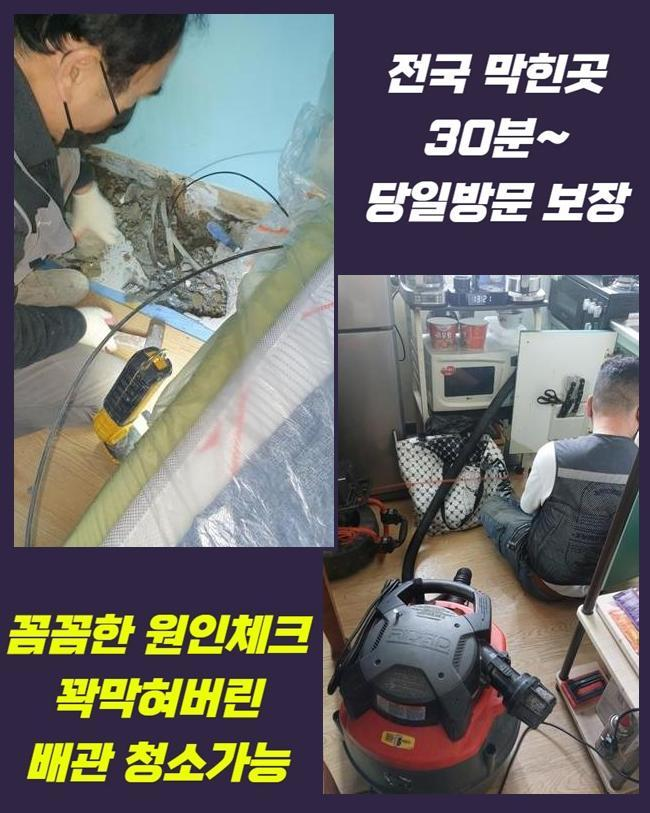
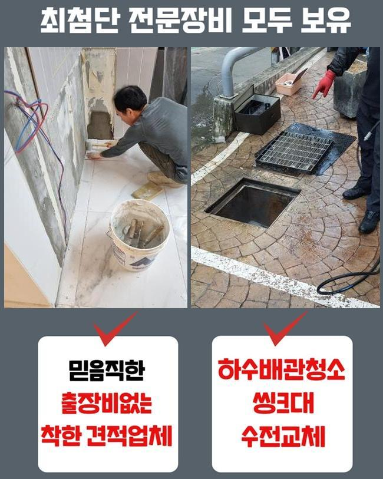
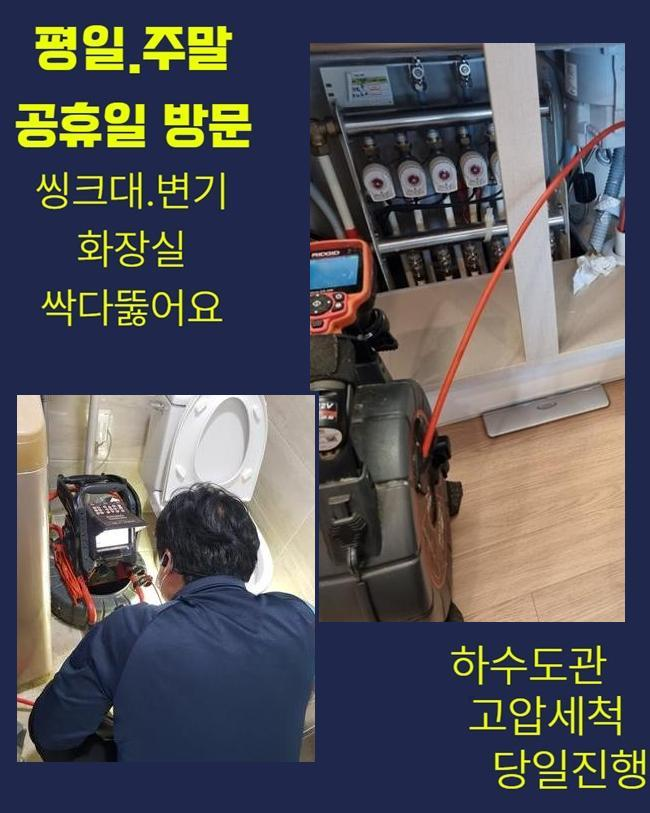

🏠 아산 좌부동화장실하수구뚫음 송악면 하수구청소 배관설비공사
아산 싱크대막힘 전문 시공 후기

📋 작업 개요
- 위치: 아산
- 서비스 유형: 싱크대막힘, 하수구막힘, 배관막힘, 누수수리, 역류해결, 뚫는업체, 배관청소, 고압세척, 설비공사
- 작업 일시: 2025. 1. 23. 16:45
- 업체명: 하수구수사대 (010-5615-2118)
🔍 문제 상황
아산 좌부동화장실하수구뚫음 송악면 하수구청소 배관설비공사
욕실공간이나 싱크대는 필수불가결한 장소인데요
그러하기에 생활하다 갑작스레 물빠짐이 안된다면 그에 대한 파급력은 표현하기 힘들 수준이겠죠
이런 상황임에도 배수기능이 약해지는 것에 대해 내버려두고 방치해버리는 케이스도 생각외로 많답니다
얼마 뒤에 증세가 사라지거나 최소한 악화되지는 않겠다고 간주하기 때문이죠
그러나 실체적 진실은 그런식으로 흘러가지 않아요
이와 관련 그것을 처음시기에 온전하게 처리한다면 고약한 정황을 막을수 있죠
배수성능이 약화되었다는건 가지배관이나 공용관로에서 물흐름을 막는 찌꺼기가 있단 소리죠
찌꺼기가 또 누적되어서 한층 까다로운 막힘으로 진행되기전에 기술자를 찾아서 조사를 시행한뒤에 순차적으로 청소해야 돼요
저번주에 해결한 곳을 세부적으로 알려드리도록 할게요
이같은 문제들로 기술자를 찾고계시는 이웃분들에게 조금이나마 도움됐으면 하네요
저희기술팀이 출장간 데는 꼬마빌딩에 소재한 식당입니다
일주일전 쯤부터 욕실과 개수대공간까지 점차적으로 물흐름이 멈췄다고 이야기하셨어요

🔎 원인 분석
💡 전문가 진단: 정밀 진단 장비를 사용하여 슬러지의 고착 여부를 판명하고 타격/세척 작업을 실시했습니다.
일절 안빠지는건 아니었으며 하루지나면 흘러내려갔기 때문에 차후에 고쳐보자는 생각으로 사용을 이어가갔다 하시네요
그래서 결국에는 정체가 가중되었기에 하수처리가 안되었고 물이 역류되는 사태까지 발발하게 된겁니다
배수관의 구조는 난삽하고 매우 좁다랗게 형성돼 있죠
그렇기에 직관적으로 볼땐 이물들이 얼마만큼 상존하는지 파악하기 힘들죠
그러므로 공사현장으로 출발할때는 내시경cctv를 반드시 챙겨야 되죠
내시경기기의 끝단에는 소형방수카메라가 달려있어요
이것으로 직관이 힘든 파이프 하부까지 선명하게 검사가 가능한것이며 찌꺼기의 특성과 대략적인 양까지 알수있죠
배관내시경으로 확인하였더니 관로 내측은 상당히 지저분했습니다
석회성분을 포함하여 다양한 이물들이 적체되어 있었어요
이러한 물질들이 엉겨서 움직이지 않는 모습을 보였기에 좁아진 배관 길목을 막아서 배수기능이 똑바로 되지 않았어요
이대로 놔둔다면 크기를 더욱더 키워가며 배관과 일체화될수도 있어요
그리된다면 한층 형편이 악화하는 것이기 때문에 조속히 시공하기로 했어요
이러한 상황에서 이용하는 도구는 샤프트분쇄기입니다

🔧 작업 과정
비좁은 틈도 쉽게 투입가능한 강점이 존재하죠
장비끝에는 노커라는 쇠붙이가 붙어서 돌면서 파이프내부에 체류중인 굳어진 잔재들을 분쇄해주죠
전면적으로 분쇄공정을 실시하였어요
전동드릴과 기계를 연결시킨뒤에 샤프트기기를 가동시켜 벽면에 붙은 찌꺼기들을 소멸시키기 시작하였죠
어떤곳에 슬러지들이 집중되어 있는지 인지하여야 했기에 배관카메라 사용도 동반진행 하였어요
내시경설비를 통해 누적량이 많은곳을 중심으로 시공해나가면 한층 신속하게 진행할수가 있는거죠
배수관 안쪽면이 훼손되는일이 없도록 조심하면서 이물들만을 분명하게 타게팅하여 분쇄를 해나갔죠
만약 작업중에 파이프에 큰 하중을 가한다면 크랙이 일어나 누수증상이 발생할수도 있죠
그렇기에 내시경설비나 플렉스샤프트 등의 기기가 구비되어야 하는 부분도 필수이지만 전문가의 테크닉 역시 충분해야 할것입니다
이물들이 누적된 구간을 깨끗이 정리한다음에 미미한 물질이라도 남아있지 않게 처리하였답니다
그후 즉각 테스트를 해보았죠
많은양의 오수를 일시에 배수문으로 투입시켰고 정체하거나 역류가 일어나지는 않는지 점검하였어요
아무 문제가 없이 소멸되는걸 보았고 바로 인접한 배수시설로 자리를 옮겼어요
이쯤하고 마감한다면 몇달간 이용하시기에는 지장이 없겠으나 차후 트러블이 생겨날 가망성이 있어서였답니다
화장실의 관로와 이어진 횡주관도 조사하여 노폐물 누적 상황을 알아보기로 했죠
욕실배관이 막혀버리면 이어진 횡주관까지 찌꺼기가 누증되었을 가망이 커서 전면적인 파이프 소제업무를 시행하는게 합당합니다
따라서 횡주관에 접근하여 검사를 세부적으로 진행하였고 저희들의 예측대로 고착화된 이물들을 발견할수 있었답니다
개별배관부터 메인관로에 이르기까지 점진적으로 세척을 진행했고 잔재들이 떨어져나간 청결한 관로를 포착할수가 있었어요
머리카락 및 치실 등등 용해되기 어려운 것들은 생활하시다가 다시 쌓일 수 존재하는데요
그러하기에 일년에 한두번은 배관기술자를 통하여 관리하시는게 좋답니다
그리고 오래도록 관로를 보존하는 대책들도 인지하시기 쉽게 차근차근 알려드렸어요


✅ 작업 완료
배수관이 막혀버리면 다양한 어려움을 맞닥뜨리게 되니 초기에 그런 상황까지 발전하지 않게끔 꼼꼼하게 예방을 시행하는게 합당합니다
빨간날에도 영업한다는 내용도 안내드렸죠
건축한 지 30년 정도된 건물에선 누수도 많이 나타나기에 그것과 관계된 의뢰도 많아요
이에 즉시 뚫음뿐만 아니라 누수공사도 하고있다는걸 안내해 드렸어요
어떤지점에서 말썽이 일어났고 얼마나 되었나 간략하게 전달해주시면 더 빠르게 상담해드릴 수 있습니다
그후 말씀해주신 시각에 전문기술자가 도구들을 챙겨서 방문드리니 편안하게 문의하시길 당부드립니다




⚠️ 베란다 누수 및 방수 관리 방법
- ✅ 비가 많이 올 때 창틀 주변이나 아래층 천장에 얼룩이 생기는지 정기적으로 확인해 보세요.
- ✅ 우수관 주변 실리콘 마감이 들뜨거나 깨진 틈새가 있는지 손상 여부를 수시로 체크하세요.
- ✅ 베란다 바닥 타일의 줄눈(메지)이 소실되면 그 틈으로 물이 침투하여 누수가 유발됩니다.
- ✅ 누수 의심 증상 발견 시 방치하면 아래층 손실이 커지므로 즉시 전문가의 진단을 받으십시오.
💡 핵심 정리
- 확실한 장비 작업(내시경 점검 및 샤프트 스케일링)으로 원인을 뿌리 뽑습니다.
- 작업 후 1년 이내에 동일한 부위 재발 시 100% 무상 A/S 서비스를 보장합니다.
- 서울 · 경기 · 인천 전 지역에 24시간 언제든 긴급 출동할 수 있도록 항시 대기 중입니다.
❓ 자주 묻는 질문 (FAQ)
🚨 아산 싱크대막힘 문제로 고민이신가요?
정확한 원인 진단과 확실한 시공으로 재발 없는 해결을 약속드립니다.
24시간 긴급 출동 | 서울 · 경기 · 인천 전지역 | 1년 내 재발 시 무상 A/S